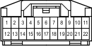

Наименование
Разъем распределительного блока
Код
C48
Каталожный номер
90980-11915
Цвет
Белый
Технические характеристики
Жгуты проводов для ремонта

Расположение
Расположение деталей в панели приборов (для моделей с левосторонним рулевым управлением) 4
Расположение деталей в панели приборов (для моделей с правосторонним рулевым управлением) 4
Система
A-TRC (для моделей с 1GR-FE, 1KD-FTV)
АБС (для моделей с 1GR-FE, 1KD-FTV)
АБС (для моделей с 2TR-FE, 5L-E)
Система кондиционирования
Щиток приборов (для моделей с левосторонним рулевым управлением)
Щиток приборов (для моделей с правосторонним рулевым управлением)
Вентилятор конденсатора
Система Crawl (для моделей с 1GR-FE, 1KD-FTV)
Система круиз-контроля (для моделей с 1GR-FE)
Система круиз-контроля (для моделей с 1KD-FTV)
DLC3
Система помощи при спуске по склону (для моделей с 1GR-FE, 1KD-FTV)
Индикатор ECT и A/T (для моделей с 1GR-FE)
Индикатор ECT и A/T (для моделей с 1KD-FTV)
Индикатор ECT и A/T (для моделей с 2TR-FE)
Система управления двигателем (для моделей с 1GR-FE)
Система управления двигателем (для моделей с 1KD-FTV)
Система управления двигателем (для моделей с 2TR-FE)
Система управления двигателем (для моделей с 5L-E)
Иммобилайзер двигателя (для моделей с системой посадки и запуска)
Система посадки и запуска
Точки соединения с массой
Система помощи при подъеме по склону (для моделей с 1GR-FE, 1KD-FTV)
Переключатель выбора "Multi-Terrain" (для моделей с 1GR-FE, 1KD-FTV)
Рулевое управление с усилителем
Система запуска (для моделей с системой посадки и запуска)
Система блокировки рулевого управления (для моделей с системой посадки и запуска)
TRC (для моделей с 2TR-FE)
VSC (для моделей с 1GR-FE, 1KD-FTV)
VSC (для моделей с 2TR-FE)
Система дистанционной блокировки дверей (для моделей с системой посадки и запуска)